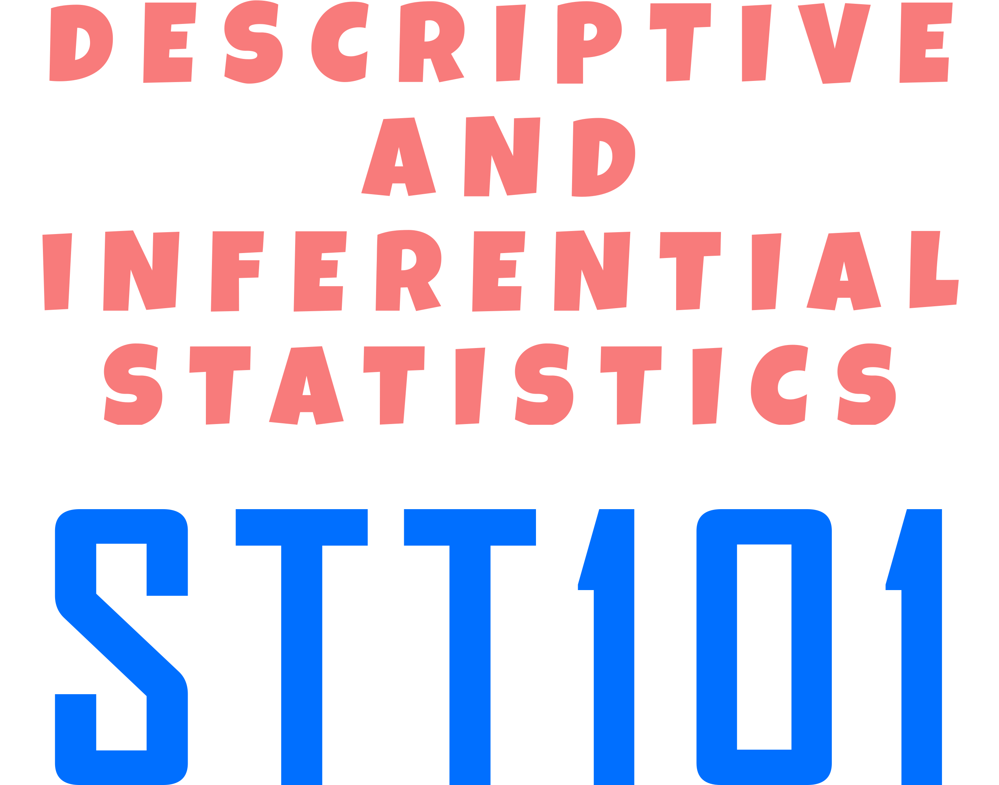

About
Contents
Descriptive Statistics
1
Descriptive Statistics
1.1
Introduction
1.2
Methods of Data Collection
1.3
Tabular and Graphical Presentations of Data
1.4
Numerical Description of Data
Probability and Distributions
2
Probability and Some Probability Distributions
2.1
Counting Techniques
2.2
Introduction to Probability
2.3
Some Probability Distributions
2.3.1
Discrete Distributions
2.3.2
Continuous Distributions
Inferential Statistics
3
Inferential Statistics
3.1
Point and Interval Estimation
3.2
Tests Concerning Means
3.2.1
One-Sample Mean
3.2.2
Difference of Two Means: Two Independent Samples
3.2.3
Difference of Two Means: Paired Observations
3.2.4
ANOVA
3.3
Test Concerning Proportions
3.3.1
One-Sample Proportions
3.3.2
Difference of Two Proportions
3.4
Tests Concerning Variances
3.4.1
Test About Population Variance
3.4.2
Test of Equality of Two Variances
3.5
Test Involving Frequency Data
3.5.1
Test for Independence
3.5.2
Goodness-of-Fit Test
Basic Statistical Modeling
4
Some Statistical Modeling Techniques
4.1
Simple Linear Regression Analysis
4.2
Correlation Anaysis
4.3
Analysis of Variance of Linear Regression
References
Published with bookdown
STT101: Descriptive and Inferential Statistics
Chapter 2
Probability and Some Probability Distributions
2.1
Counting Techniques
2.2
Introduction to Probability
2.3
Some Probability Distributions
2.3.1
Discrete Distributions
Binomial Distribution
Poisson Distribution
2.3.2
Continuous Distributions
Normal Distribution
Normal Approximations to the Binomial Distribution